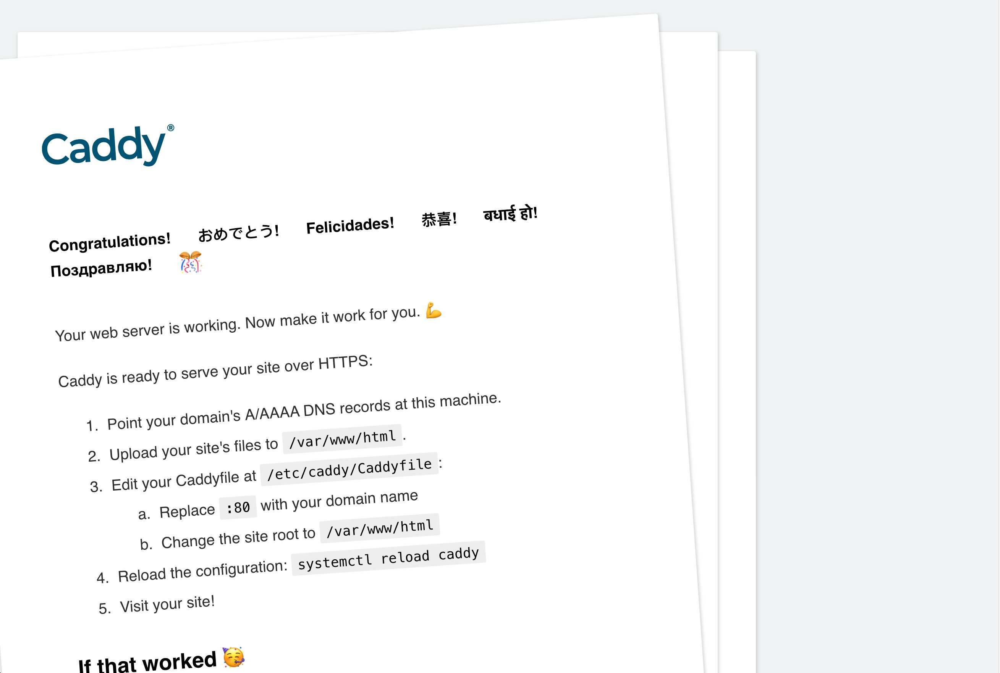

使用 caddy 替换nginx 免费ssl证书
- 作者:
- 淡白
- 创建时间：
- 2022-08-30 19:36:22
- caddy ssl
摘要：Caddy是一个强大的、可扩展的平台，用Go编写，可用于为站点、服务和应用程序提供服务。大多数人将Caddy用作Web服务器或代理。Caddy可以充当长时间运行的进程的角色，可以动态修改配置，也可以使用配置文件进行配置。Caddy可以免费签发SSL证书。通过按照安装步骤安装Caddy，然后修改配置文件，可以启动Caddy并访问服务器。遇到的问题可能是网站根目录权限不正确或者SELinux开启的问题。
caddy 介绍
Caddy 是一个强大的、可扩展的平台，可以为您的站点、服务和应用程序提供服务，用 Go 编写。
大多数人将Caddy用作Web服务器或代理，但Caddy的本质是诸多服务器的服务器。在安装了必要的模块后，它就可以充当长时间运行的进程的角色！
基于Caddy的API，它的配置能被动态修改，且能导出来。虽然不需要配置文件，但你仍然可以使用它们；大多数人还是最喜欢通过Caddyfile对Caddy进行配置。虽然通过配置适配器可以对Caddy使用多种的配置文件格式，但它的原生配置语言是JSON。
免费签发ssl证书
Caddy已经编译好了所有主流平台的版本，且没有运行时依赖项。
官网
安装
根据 Install 中的各系统安装步骤完成安装。
安装成功后
root@VM-0-3-ubuntu:~# caddy version
v2.5.2 h1:eCJdLyEyAGzuQTa5Mh3gETnYWDClo1LjtQm2q9RNZrs=
执行
sudo systemctl enable --now caddy
sudo systemctl start --now caddy
访问服务器 ip 可以看到

修改配置
文件路径 /etc/caddy/Caddyfile
:80 {
root * /usr/share/caddy
file_server
}
p00q.cn {
encode gzip
reverse_proxy 127.0.0.1:1001
}
重载或者重启服务
sudo systemctl reload caddy
sudo systemctl restart caddy
通过域名访问即可
遇到的问题
手动执行/usr/bin/caddy run --environ --config /etc/caddy/Caddyfile
运行后网站是能正常进行访问的。
但是在使用systemctl start caddy 启动的服务访问返回403
可能的情况是
- 网站根目录没有权限
- SELinux设置为开启状态